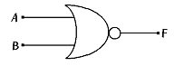
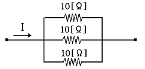
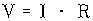
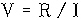
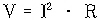
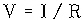
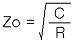
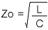
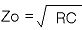
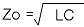

정보기기운용기능사 (2006-10-01 기출문제)
1과목: 전산 기초 이론
1. 연산 장치의 구성 요소 중 연산 결과가 양수, 0, 음수인지 또는 캐리나 오버플로의 발생과 같은 연산에 관계되는 정보를 저장하는 곳은?
- 누산기
- 가산기
- 상태레지스터
- 데이터레지스터
(정답률: 55%)

2. 처리하고자 하는 자료나 프로그램 등을 컴퓨터 내부로 받아들이는 기능은?
- 입력기능
- 연산기능
- 제어기능
- 출력기능
(정답률: 79%)
3. 2진수 01000을 1의 보수 (one's complement) 방식으로 나타낸 것은?
- 10111
- 11000
- 01001
- 10110
(정답률: 82%)
4. 그림과 같은 논리 회로는?

- AND gate
- OR gate
- NOT gate
- NOR gate
(정답률: 73%)
5. 다음 중 운영체제(Operation System)의 제어프로그램이 아닌 것은?
- 언어번역프로그램
- 감시프로그램
- 작업관리프로그램
- 데이터관리프로그램
(정답률: 79%)
6. 컴퓨터를 세대별로 분류할 때 진공관을 사용하던 세대를 몇 세대라 하는가?
- 제 1세대
- 제 2세대
- 제 3세대
- 제 4세대
(정답률: 89%)
7. 다음 중 컴퓨터의 중앙처리장치(CPU)에 관한 설명으로 적합하지 않은 것은?
- 제어, 연산, 기억장치로 이루어져 있다.
- 명령어들을 해석하고 데이터들을 기억장치로 이동 시킨다.
- 작업수행에 필요한 데이터를 직접 입·출력하고 전송한다.
- 컴퓨터의 전체를 통제·감독한다.
(정답률: 60%)
8. 다음 불대수의 기본 관계 중 틀린 것은?
- X+0 = X
- X · 0 = 0
- X+1 = X
- X · 1 = X
(정답률: 73%)
9. 인터프리터 방식에 대한 설명이 틀린 것은?
- 원시프로그램을 한 줄씩 번역하여 실행한다.
- 프로그램의 실행 속도가 가장 빠르다.
- 문법 오류를 쉽게 수정할 수 있다.
- 일부가 수정되어도 프로그램 전체를 수정할 필요가 없다.
(정답률: 56%)
10. 다음 중 디버깅(debugging)의 설명으로 옳은 것은?
- 프로그램 중에서 잘못된 부분을 수정하는 것.
- 프로그램을 번역하는 것.
- 프로그램을 진행 과정을 의미한다.
- 프로그램의 작성 과정을 의미한다.
(정답률: 80%)
2과목: 정보 기기 운용
11. 스팸(spam)메일로 인한 피해사례라고 볼 수 없는 것은?
- 시간 낭비
- 자원 낭비 및 시스템 손상
- 정상 메일 수신 장애
- 충분한 정보의 제공
(정답률: 85%)
12. 아래 회로에 전류 I를 흘렸을 때 30[W]의 전력이 소모되었다. 도선에 인가한 전류 I는 얼마인가?

- 1.2[A]
- 2.12[A]
- 3[A]
- 4.5[A]
(정답률: 79%)
13. 다음 중 700국번호를 이용하여 지정된 전화번호를 호출하면 저장된 각종 정보를 청취할 수 있는 서비스는?
- 전자게시판
- 음성정보 서비스
- 텔레메트리
- 팩스
(정답률: 74%)
14. 다음 중 팩시밀리(Facsimile)의 필요 요소가 아닌 것은?
- 방전 수단
- 광전변환 수단
- 전송 수단
- 주사 수단
(정답률: 52%)
15. 다음 중 전화선을 이용하지 않는 것은?
- Teletext
- FAX
- ARS
- ADSL
(정답률: 55%)
16. 다음 도체 중 고유저항이 가장 적은 것은?
- 텅스텐
- 알루미늄
- 구리
- 백금
(정답률: 65%)
17. 사무기기 중 주로 정보의 보존검색에 사용되는 것은?
- 마이크로필름
- PBX
- Telex
- 팩시밀리
(정답률: 61%)
18. 다음 중 옴(ohm)에 법칙이 맞는 것은?




(정답률: 75%)
19. 전자우편(E-mail)에 대한 설명으로 적합하지 않은 것은?
- 사용자의 정보와 파일을 주고 받을 수 있다.
- E-mail을 전송할 때 메일 서버는 필요 없다.
- 짧은 시간에 여러 곳에 같은 내용이 메시지를 동시에 보낼 수 있다.
- 전자우편의 주소는 ID@도메인 이름으로 이루어져 있다.
(정답률: 84%)
20. 팩시밀리(Facsimile)의 설명으로 가장 적합한 것은?
- 데이터, 음성, 영상을 동시에 송수신할 수 있는 설비를 갖춘 회의실에서 원격지의 상대방과 동시에 회의를 할 수 있는 시스템을 말한다.
- 그림, 문자 등 정지화상에 관한 정보를 원본과 같은 형태로 원격지의 상대방에게 전송하는 시스템 서비스를 말한다.
- 음성과 통화자의 화면을 동시에 전송하여 통화 할 수 있는 서비스를 말한다.
- 가입전신기(Telex)와 문서편집기(Word processor)의 기능을 통합한 정보 통신용 사무자동화 단말기를 말한다.
(정답률: 70%)
21. 인터넷 도메인 이름에서 교육기관에 해당되는 것은?
- net
- gov
- com
- edu
(정답률: 71%)
22. 다음 중 보조기억 장치에 대한 설명으로 맞지 않은 것은?
- 중요한 데이터의 백업용으로 사용한다.
- 보조기억장치가 없어도 컴퓨터를 동작시킬 수 있다.
- 주기억장치가 없는 경우 이를 대치하기 위하여 사용된다.
- 주기억장치에 비해 느린 접근 속도를 갖는다.
(정답률: 53%)
23. 다음 중 변복조기 기능과 멀티플렉서가 혼합된 형태의 장치를 무엇이라 하는가?
- 멀티포트 모뎀
- 멀티포인트 모뎀
- 다이얼업 모뎀
- 전용선 모뎀
(정답률: 56%)
24. 5[A]의 전류를 2분간 흘렸을 때의 발열양은 몇 Cal인가?(단, 이때의 저항은 10[Ω]임)
- 250 Cal
- 500 Cal
- 7200 Cal
- 30000 Cal
(정답률: 68%)
25. 키보드를 장시간 두드림으로써 어깨와 손가락 부위 등에 손상을 입게 되는 직업병을 나타내는 것은?
- Dos 증후군
- VDT 증후군
- HDD 증후군
- V3 증후군
(정답률: 86%)
26. 하드디스크를 관리할 때 주의 할 사항 중 잘못 설명된 것은?
- 충격이나 진동을 주지 않아야 한다.
- 시스템 OFF시 정상적인 순서로 전원을 차단한다.
- 하드디스크를 정기적으로 유틸리티 프로그램으로 정리한다.
- 컴퓨터를 자주 ON시켜 하드디스크를 워밍업 시킨다.
(정답률: 80%)
27. 워드프로세서(word processor)의 구성으로 볼 수 없는 것은?
- 전송장치
- 인쇄장치
- 메인 프로세서
- 문서 보존 및 관리 장치
(정답률: 49%)
28. 사인파의 주기가 0.1[sec]일 때 이 파형의 주파수는 몇 [Hz]인가?
- 5
- 10
- 15
- 20
(정답률: 80%)
29. 쌍방향 CATV의 응용분야와 거리가 먼 것은?
- 방송응답퀴즈
- 원격검침
- 방범 및 방자
- 문서의 전송
(정답률: 71%)
30. 컴퓨터가 바이러스(Virus) 프로그램에 감염되었을 때의 증상이 아닌 것은?
- 예기치 못한 음악이 연주되기도 한다.
- 이상한 메시지가 디스플레이 된다.
- 자료가 없어지는 경우는 없다.
- 파일(File)들이 파괴되기도 한다.
(정답률: 71%)
3과목: 정보 통신 일반
31. 우리나라의 무궁화위성과 같은 정지형 통신위성의 위치를 가장 적합하게 나타낸 것은?
- 지상 약 15000[㎞]
- 지구 북회귀선상 약25000[㎞]
- 지구 적도 상공 약 36000[㎞]
- 지구 극점 약 45000[㎞]
(정답률: 82%)
32. 신호파형 중 주파수를 변환시키는 변조 방식은?
- AM
- FM
- PM
- PCM
(정답률: 67%)
33. 광통신 시스템의 구성 요소에 해당되지 않는 것은?
- 수정발전기
- 광원
- 광섬유 케이블
- 광검출기
(정답률: 76%)
34. 정보의 배치처리(Batch procession)방식에 대한 적합한 설명은?
- 단말장기를 이용하여 데이터를 발생할 때마다. 즉시 처리하는 방식
- 아날로그 데이터를 디지털 데이터로 교환처리 하는 방식
- 자기테이프 장치를 사용하여 처리하는 온라인방식
- 데이터를 일정량 모아 가지고 처리하는 방식
(정답률: 61%)
35. 송신측은 한 개의 블록을 전송한 다음 수신측에서 에러의 발생을 점검 추 ACK나 NAk를 보내올 때 까지 기다리는 방식은?
- Stop-and-Wait ARQ
- 연속적 ARQ
- 적응적 ARQ
- 전진에러 수정
(정답률: 78%)
36. 데이터 전송설로의 감쇠량에 대한 극소 조건이 성립되었을 때 선로의 특성 임피던스(Zo)는?(단, R : 저항, L : 인덕턴스, C : 캐래시턴스)




(정답률: 52%)
37. 개인용 컴퓨터를 통해 이용자 간에 서신을 상호 교환할 수 있는 정보통신 서비스를 무엇이라 하는가?
- 전화회의
- 전자우편
- 데이터베이스
- CATV
(정답률: 79%)
38. 컴퓨터 등과 정보 통신설비를 이용하여 재화 또는 용역을 거래할 수 있도록 설정한 가상의 영업장은?
- 전자회의
- 인터페이스
- 사이버 몰
- 정보통신망
(정답률: 75%)
39. 주파수분할 다중화방식에서 각 채널 간 간섭을 막기 위하여 일종의 완충지역 역할을 하는 것이 요구된다. 이것을 무엇이라고 하는가?
- 서브 채널(Sub-CH)
- 채널 밴드(CH Band)
- 채널 세트(CH set)
- 가드 밴드(Guard Band)
(정답률: 75%)
40. 단말기에서 MODEM과 연결되는 RS-232C 25핀 콘넥터에서 2번 핀의 기능은?
- 송신요구
- 전송해제
- 수신
- 송신
(정답률: 75%)
41. 데이터통신시스템을 데이터 전송계와 데이터 처리계로 분류한다면 다음 중 데이터 전송계와 관련되지 않는 것은?
- 중앙처리장치
- 통신제어장치
- 변복조기
- 데이터전송회선
(정답률: 70%)
42. 데이터가 발생할 때마다 즉시 입력하여 그 처리 결과를 바로 얻는 방법은?
- 실시간(Real time)처리
- 일괄(Batch)처리
- 오프라인(off 0line)처리
- 시분할(Time division) 배치처리
(정답률: 88%)
43. 다음 회선교환방식에서 정보전달의 5단계 순서로 적합한 것은?
- 회로연결→링크확립→메시지전달→링크절단→회로절단
- 링크확립→회로연결→메시지전달→회로절단→링크절단
- 회로연결→메시지전달→회로연결→링크절단→회로절단
- 링크확립→메시지전달→회로연결→회로절단→링크절단
(정답률: 80%)
44. 다음 중 데이터통신의 응용분야가 아닌 것은?
- 워드프로세싱
- 홈뱅킹(Home-Banking)
- 전자사서함
- 전자상거래
(정답률: 76%)
45. PCM 통신방식에서 송신측 과정이 아닌 것은?
- 부호화
- 표본화
- 양자화
- 복호화
(정답률: 76%)
46. 정보 통신 교환기에서 시스템다운(system down) 현상과 관계가 없는 것은?
- 소프트웨어의 결함으로 발생되는 현상
- 하드웨어의 결함으로 발생되는 현상
- 설계 통화량보다 높은 통화량이 가해지면 전체적인 교환기능이 정지되는 현상
- 가입자 번호 변경이나 특수기능 부여시 프로그램 변경을 용이하게 하기 위한 현상
(정답률: 69%)
47. 전송주파수 대역폭과 통신 속도와의 관계는?
- 서로 비례한다.
- 통신 속도 제곱에 반비례한다.
- 서로 반비례한다.
- 관계없다.
(정답률: 67%)
48. LAN의 장점이라고 볼 수 없는 것은?
- 고속의 정보전송이 가능하다.
- 다른 정보통신기기와도 통신이 가능하다.
- 외부 통신망의 제약을 받지 않는다.
- 방송 형태로 서비스 이용이 불가능하다.
(정답률: 77%)
49. 데이터통신시스템에서 정보처리의 구분은?
- 온-라인과 실시간처리
- 일괄처리와 실시간처리
- 대기방식과 부하 부담
- RAM과 ROM
(정답률: 70%)
50. 통신 프로토콜에 관한 설명으로 가장 적합한 것은?
- 데이터 길이, 전송속도, 데이터 단위 등을 규정한 법규이다.
- 정보를 보내거나 받을 수 있는 두 개체 간에 무엇을 어떻게, 언제 통신할 것인가에 대하여 서로 약속한 절차이다.
- 국제 초고속정보통신망의 이용절차에 관한 세칙이다.
- 정보통신망 시스템구성과 운용에 관한 이용규정이다.
(정답률: 69%)
4과목: 정보 통신 업무 규정
51. 정보화 촉진 등을 위한 정보화 시책의 기본 원칙과 관련이 적은 것은?
- 민간 투자의 확대화 공정 경쟁 촉진
- 환경변화에 능동적으로 대응하는 제도의 수립·시행
- 정보통신기반에 대한 자유로운 접근과 활용
- 지역적 경제적 차별화와 고도적 역무제공
(정답률: 58%)
52. 정보화 추진관련 중앙행정기관의 장은 정보화 촉진 기본계획에 따라 정보화 촉진 시행계획을 수립하여 관계 장관과 협의를 거쳐 기본계획과 연계시켜야 되는데 여기서 관계 장관은 누구를 말하는가?
- 국무총리
- 행정자치부장관
- 산업자원부장관
- 정보통신부장관
(정답률: 73%)
53. 정보화추진위원회에 관한 설명으로 틀린 것은?
- 정보화추진위원회는 국무총리 소속하에 둔다.
- 정보화추진위원회는 정보화 촉진 등에 관한 사항의 심의기관이다.
- 정보화추진위원회의 위원장은 정보 통신부장관이 된다.
- 정보화추진원회는 정보화를 효율적으로 추진하기 위하여 분야별로 정보화 추진분과위원회를 설치 및 운영 할 수 있다.
(정답률: 60%)
54. 전기 통신사업자의 의무가 아닌 것은?
- 통신사업의 개시의무
- 전기통신역무 제공의무
- 업무처리원칙 준수의무
- 통신프로그램 개발의무
(정답률: 63%)
55. 별정통신사업을 경영하고자 하는 자는 정보통신부장관에게 어떤 행위를 하여야 하는가?
- 등록하여야 한다.
- 허가를 받아야 한다.
- 신고하여야 한다.
- 인증을 받아야 한다.
(정답률: 56%)
56. 전기통신업무에 종사하는 자가 그 재직 중 통신에 관하여 알게 된 타인의 비밀을 누설한 경우에 어떤 처벌을 받는가?
- 구속되고 사업허가가 취소된다.
- 규정된 징역 또는 벌금에 처한다.
- 모든 손해보상과 원상 복구를 하여야 한다.
- 단지 해당사업종사를 하지 못하게 된다.
(정답률: 78%)
57. 정보통신공사업법 관련 정보통신기술자의 등급 분류가 아닌 것은?
- 상급 기술자
- 고급 기술자
- 중급 기술자
- 초급 기술자
(정답률: 63%)
58. 다음 중주파수할당을 가장 적합하게 표현한 것은?
- 특정한 주파수의 용도를 정하는 것
- 특수 목적을 위하여 이용규정을 정하는 것
- 특정 주파수의 이용권리를 특정인에게 부여하는 것
- 이동전화 개설시 특정한 주파수를 지정하는 것
(정답률: 49%)
59. 통신사업자의 전기통신설비와 이용자 전기통신설비 간의 경계점을 무엇이라 하는가?
- 분계점
- 절분점
- 통합점
- 공동점
(정답률: 87%)
60. 우리나라 전기통신사업의 구분은?
- 일반통신사업, 특정통신상업, 방송통신사업
- 유선통신사업, 무선통신사업, 위성통신사업
- 기간통신사업, 별정통신사업, 부가통신사업
- 정보통신사업, 부가통신사업, 무선통신사업
(정답률: 83%)